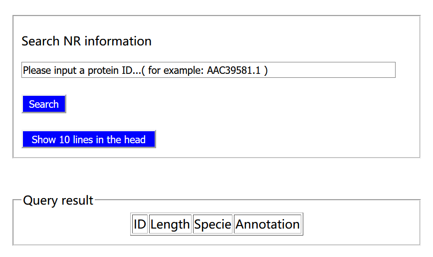

How did I do my homework?
第一部分 网站页面布局
1、我们利用div将网站主页分成head、navigation、section1、section2和footer五部分。
2、head
在head中，我们设计了数据库网站的logo--->>>，logo左边的图片来源于Wikipedia，
是神经递质感受器蛋白的结构示意图。我们为logo设计了链接，你可以通过点击logo回到homepage。
3、nav
我们把导航栏分成Home、How did I do my homework、About、Help、Document、Contact us和More七部分组成。
3.1、Home可以把你带回主页面
3.2、How did I do my homework就是你现在看到的页面，它记录了我们完成作业的过程。
3.3、About里有对neurotransmitter receptor这个蛋白质的详细介绍。
3.4、Help中，你可以获得有关网站大概介绍和使用方法等的介绍。
3.5、Document中，你可以查看我们网站的部分文件。
3.6、Contact us中有我们的联系方式。
3.7、More中提供了常用的检索工具，可以解决你的大部分问题。
4、section1。
这一部分是我们数据库网站的核心，提供了数据库检索工具和数据库内容更新工具。需要注意的是，为了保护我们的数据库，
数据库更新工具使用前需要联系我们获得许可，否则你将无法使用。
5、section2。
这部分简单介绍了我们网站的大概功能，并提供了两个链接，以帮助用户简单了解神经递质感受器和基因家族。其次，为了避免用户浏览网页时
比较无聊，我们插入了音乐供用户欣赏。
6、footer。
底栏部分声明了网站版权归The_Big_Bang_Theory小组所有。
第二部分 网页版的php数据库更新工具
1、使用介绍

1.1、 Insert功能
如图，我们提供了Insert按钮，在你数据准备工作完成后，你只需点击Insert，进入登录界面登录后就可以一键将数据插入数据库；你需要做的准备
工作有：
1）从各种渠道获取蛋白质数据，保存为fasta格式文件；
2）利用我们提供的基于python的数据格式转化工具，将格式转化为我们需要的格式，
该工具源码可以在Document中获取，或者联系我们获取；
3）将格式转化后得到的data.txt文件上传到我们的数据库指定目录下
（/opt/lampp/htdocs/student2018/201728012115035@159.226.67.97），该操作需要我们的许可。
1.2、 what's our data look like按钮
这个工具可以查看导入数据库前的原始数据，你可以直接点击查看。
2、如何实现的
为了实现网页版php数据库插入功能，我们写了php脚本，利用php循环操作和sql插入语句将数据插入。但原始fasta格式不利于循环插入，所以我们
又开发了一个基于python的数据格式转换工具，它把原始的fasta格式文件（每个蛋白的第一行为>开头，后面每行都是蛋白序列，序列中有换行符，
蛋白间以两个换行符间隔，从NCBI中下载的原始fasta数据就是这样子的），转换成了我们需要的格式文件（每一行是一个蛋白的信息，其中有五部分：
annotation,id,len,seq,specie。它们以@@这两个字符间隔，蛋白间以换行符间隔）。为了保护我们的数据库，我们设置了登录界面，在你点击Insert
按钮后，会弹出一个登录界面，只有正确输入用户名和密码才可以向我们的数据库插入数据。
为了让用户大致了解转换前的数据格式要求，我们提供了what's our data look like按钮，它用简单的php-while循环实现。
第三部分 数据库查询工具
1、使用介绍

1.1、 Search功能
如图，我们提供了Search按钮，在输入栏中输入蛋白的ID后，点击Search就可以查询数据库中该蛋白的长度、物种、注释的信息。
1.2、 Show 10 lines in the head按钮
点击该按钮可以查看数据库中的前十条数据。
2、如何实现的
Search功能的实现，我们是通过html和php的post来传送输入栏中的变量，然后编写php，以输入的ID字段来查询SQL数据库语句和输入查询
结果语句。
为了让用户大致了解数据库中数据的内容，我们提供了Show 10 lines in the head，它用简单的php-while循环实现。
第四部分 数据来源，数据有多少条记录，来自哪些物种
我们的数据来源于NCBI网站中protein数据库中搜索的神经递质感受器数据；我们从中筛选了149条数据，并批量下载。
我们的蛋白数据来源物种有：
'Apteronotus leptorhynchus',
'Aspidoscelis inornata',
'Aspidoscelis uniparens',
'Bathycoccus prasinos',
'Caenorhabditis elegans',
'Carassius auratus',
'Corethrella appendiculata',
'Danio rerio',
'Drosophila melanogaster',
'Drosophila rubida',
'Felis catus',
'Gallus gallus',
'Haliotis asinina',
'Homo sapiens',
'Ictalurus punctatus',
'Micromonas commoda',
'Mus musculus',
'Oncorhynchus mykiss',
'Oreochromis mossambicus',
'Pimephales promelas',
'Rattus norvegicus',
'Schistosoma mansoni',
'Sus scrofa',
'Taeniopygia guttata',
'Takifugu rubripes',
'Trichoplax adhaerens'这26个物种。
2018.05.30更新
新增特性：
1.把Database insert tool位置移动到右侧section的Other tools中。
2.删去导航栏中Help,Document,Contact us,More中的音乐，只保留Home page的背景音；新增How did I do my homework栏中的背景音（Adele的《When we were youg》）。
3.对导航栏高度和导航栏选项间距做了调整
4.Search NR information支持模糊搜索了！Search结果中增加了查看蛋白序列和从数据库中删除记录这两个功能。
5.重做了Database Insert Tool！
原来插入数据库需要相当麻烦的步骤（要先手动执行编写的格式转化工具fstTOdb.py，然后把转换后的文件
通过WinSCP上传到服务器中，还要指定特定的文件名，才可以进行插入操作，见上面的第二部分--网页版的php数据库更新工具），现在我把格式转换的过程和插入过程都放在后台自动实现，而且
直接靠网页上传文件获取上述过程的输入！密码保护还是必须的，所以我们保留了最终插入前的保护页面。